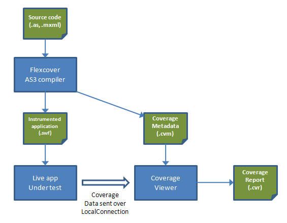
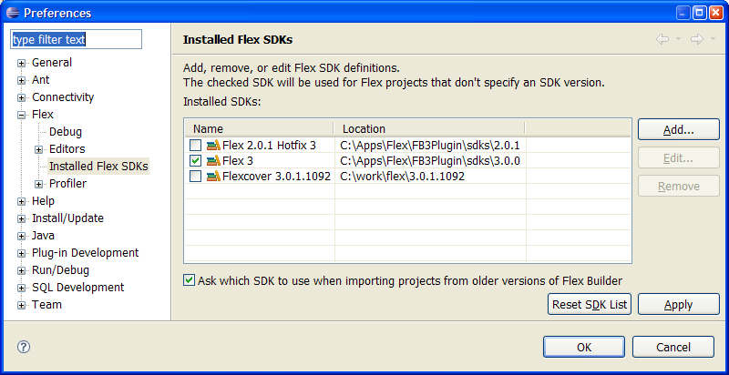
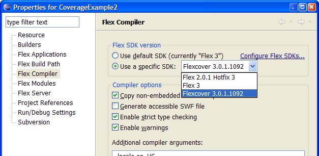
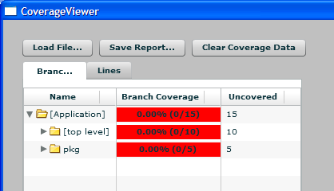
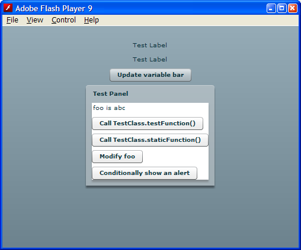
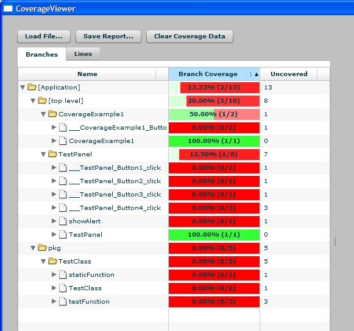
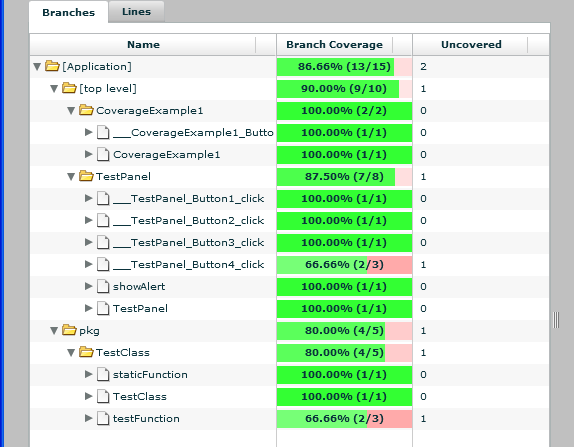
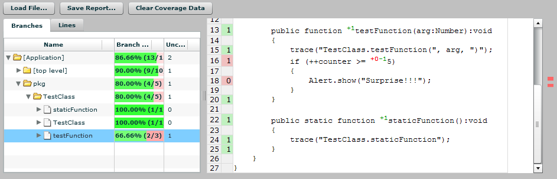
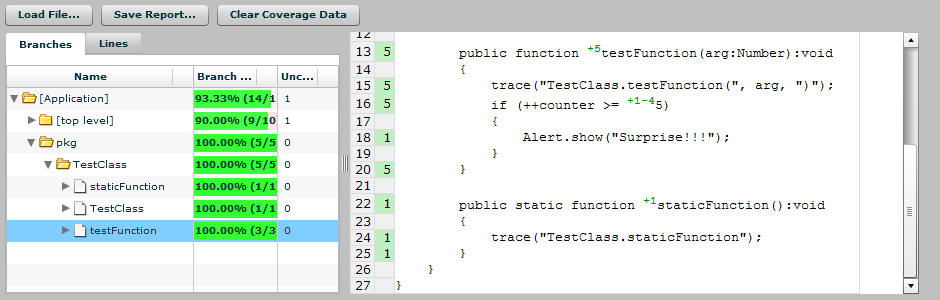

Version 0.81
Joe Berkovitz (Noteflight, LLC) and Alex Uhlmann (Adobe Consulting)
Welcome to Flexcover, a tool that measures how much of your Flex, AIR or AS3 application code actually runs when tested. This document offers some general information about Flexcover, explains how to install it, and then walks through a quick tour of its features. A concluding reference section describes the command options, file formats and APIs.
New features introduced since Flexcover 0.50 include:
Flexcover is a code coverage tool for Flex, AIR and AS3. It incorporates a set of modifications to the Flex SDK, including both a custom version of the mxmlc/compc compiler and custom framework libraries. The custom compiler inserts extra function calls in the code within the SWF or SWC output file. Code produced in this fashion is called instrumented code, because the additional function calls act like a measuring instrument: Flexcover measures which lines and conditional branches in the application have executed, and how many times.
At runtime, these function calls send information on the application's code coverage to an object called a coverage agent, that is responsible for summarizing and recording the coverage data. The default coverage agent sends this data out using a LocalConnection. The modified compiler also emits a separate coverage metadata file that describes all the possible packages, classes, functions, lines and conditional branches in the code, as well as the names of the associated source code files. The metadata is essential for measuring coverage, because it is the only source of information on code that has not executed.
The companion to this modified compiler is an AIR application called CoverageViewer. CoverageViewer listens on the LocalConnection used by the default coverage agent, and works with the coverage data that is transmitted from instrumented applications that are running at the same time.
After coverage data has been collected by CoverageViewer, it can be saved as a coverage report, which is an XML file describing all the elements in the program which could conceivably be executed, and their coverage statistics.
Here's a block diagram that shows how the different components and file types used by Flexcover relate to each other:

CoverageViewer is the application through which one interacts with the Flexcover system when testing. It's more than just a viewer; it does the following:
Flexcover's modified compilers accept special command line options that control its behavior. By default, however, a Flex SDK modified by Flexcover will instrument every application that is built with it, since this provides the most convenient behavior for many developers and eliminates the need for changes to one's build process.
In this way, instrumented applications may be built by simply configuring your project's current development tools to use the custom Flexcover SDK. No compiler switches or options are needed, and you can use whatever tools you like to build your instrumented applications, including Flex Builder.
The installation directory structure looks like this:
sdk-modifications-3_0/ (customized files for 3.0 SDK)
lib/
[...mxmlc/compc compiler libraries...]
framework/
air-config.xml
flex-config.xml
libs/
CoverageAgent.swc
sdk-modifications-3_2/ (customized files for 3.2 SDK)
lib/ (structure same as 3.0)
framework/
CoverageViewer.air (AIR app to collect and view code coverage)
CoverageExample1/ (pre-compiled, instrumented sample application)
bin/
CoverageExample.cvm
CoverageExample.swf
src/
[...example source code...]
CoverageAgent/ (coverage agent source for reference purposes)
bin/
src/
doc/ (documentation)
Flexcover uses a customized version of the Flex compiler and also requires a special Flex framework library. To use flexcover you must first create a version of the Flex 3 SDK that has been modified to include these components. (It would be simpler if Flexcover could include a complete SDK that was already modified, but that file would be too large to be hosted on Google Code as a download.) Once you have created this modified SDK, you can freely copy the SDK to other machines without repeating the initial creation process.
To create the modified SDK, unzip a copy of the Flex 3.0 or Flex 3.2 SDKs into a directory on your computer that is separate from any existing Flex SDK installation you might have. For simplicity and predictability, we recommend that you download either Adobe Flex SDK 3.2.0.3794 or Adobe Flex SDK 3.0.1.1092 with this version of Flexcover, because these are the exact Flex SDK versions that the Flexcover modifications are based on.
Howvever, you may use other SDKs if you wish. Other Flex 3 SDK distributions are available from the Flex 3 SDK Downloads page, or you can modify a copy of some particular Flex 3 SDK version that you already have on hand (including the one that comes with Flex Builder 3).For clarity, it's a very good idea to give this SDK directory a descriptive name, for example flexcover-sdk-3.0.
The flexcover distribution contains directories named sdk-modifications-3_0 and sdk-modifications-3_2. Choose the appropriate directory based on the Flex SDK you are using, and copy its contents into the root directory of the special Flex SDK that you created in the previous step.
Make sure that you are copying sdk-modifications-3_x/lib, sdk-modifications-3_x/frameworks, etc. directly on top of the corresponding subdirectories in the SDK that are named lib, frameworks, and so on. Do not make the mistake of copying the sdk-modifications-3_x directory itself into the SDK. The files in the sdk-modifications-3_x/ directory are supposed to overwrite the corresponding ones in the destination SDK; that's intentional! In a typical OS desktop such as Windows Explorer or the MacOS Finder, you should open windows for both directories, then drag all items in the sdk-modifications window and drop them into the window for the destination SDK.
When you want to make use of Flexcover to build your applications with coverage instrumentation, you will need to change your build process to use the custom Flexcover SDK that you just created. Doing so will automatically generate instrumented AS3 bytecode, whether you are using compc (building library projects) or mxmlc (building application projects).
No matter what your build approach, you don't need to change the compiler arguments: coverage instrumentation will be on by default whenever the Flexcover SDK is used, and a coverage metadata file will automatically be created alongside your output SWC or SWF file.
Modifying Flex Builder. If you are using Flex Builder, making this change is easy. First add your custom Flexcover SDK to Flex Builder using the following steps:
The result should look similar to this:

Now, whenever you want to use Flexcover to build a Flex Builder project, simply go into that project's Properties, and select Flex Compiler on the left. On the right, you will see an area labeled Flex SDK Version. Click the radio button labeled "Use a specific SDK", and select your custom SDK from the dropdown list:

With FlexBuilder 3.0.2, you can make use of the -coverage=false and -coverage=true flags in the Project Preferences / Flex Compiler options to turn code coverage instrumentation on and off for specific projects.
Modifying Ant Builds. You will probably need to selectively override a property definition such as FLEX_HOME that points to the SDK to be used. This can be done on the command line if desired, as in:
ant -DFLEX_HOME=c:/sdks/flexcover-sdk-3.0
Install the CoverageViewer.air application that is part of the Flexcover distribution, and go through the AIR installation process. You may need to first install the AIR runtime in order to do so -- this is readily available from Adobe's website.
If you've gotten this far, you're ready to try things out by monitoring the code coverage of the sample CoverageExample1 application.
CoverageExample1 has already been compiled with a custom Flexcover SDK; you don't have to rebuild it (although you can if you want to!). Looking in the CoverageExample1/bin/ subdirectory, you will find the following files:
The compiled application. CoverageExample1.swf is, of course, the sample application itself, compiled by the custom Flexcover SDK so that its code is instrumented to measure and transmit coverage data.
Its coverage metadata. CoverageExample1.cvm is a "coverage metadata" file that is used to determine what executable lines actually exist in the source code, as a basis for coverage calculations. If you peek inside this file, you'll see it's a text file; each line describes one executable line or conditional branch in the program.
As a first step, start up CoverageViewer so that it will load the CVM file and report on coverage statistics for the sample application. You can do this in any of the following ways:
After launching the CoverageViewer AIR application on the coverage metadata for CoverageExample1, you'll see something like this:

All the data will reflect zero coverage, which is hardly surprising since the application hasn't started yet!
Leaving the CoverageViewer running, open the CoverageExample1.swf file in the Flash Player to run the application. You should see something like this:

At this point, you may want to quickly browse the source of the application in the src/ directory -- there's not very much to this example!
Now go back to the CoverageViewer window. You will already see a change in the statistics, since starting up the instrumented application will have caused some code to execute. This is a good time to start to explore the features of the Coverage Viewer.
Branch and Line coverage tabs. The main view is tabbed to allow the examination of either branch or line coverage statistics.
By default the display shows branch coverage. Each of the following are considered a single "branch", and are counted as covered if they occur one or more times:
Line coverage is simpler: a line of the program is considered to have been covered if any portion of it runs at least once.
Drill-down coverage statistics. Each line of the main view is an expandable row describing (in hierarchical order) the coverage for:
If you drill down on every element of the example application at this point, you'll see something like this:

At this point we're looking at all the packages, classes and functions in this simple application. Some functions have names like testFunction in pkg.TestClass; these are ActionScript functions. Other functions have names like ___TestPanel_Button1_click. These are functions that correspond to event scripts in MXML components.
The data columns in this table include:
You can sort the display on any of these columns by clicking in the area to the right of each column label to select an ascending or descending sort. Sorting by uncovered elements is a particularly handy way to focus on the least-covered portions of an application.
Go back to the sample application window and click each button exactly once. You'll see the data change in a live fashion, and the display may now look like this:

We can see that a lot of code has run as a result of our "test", but that some didn't. Which bits didn't run? To explore that question, we'll want to use the source-viewing features of the CoverageViewer.
Source Viewer shows the source code for a class, annotated with branch and line coverage information. Let's look at the source for pkg.TestClass: click in the table cell marked testFunction, which we can see did not get full coverage. We'll now get a split screen display like this:

Let's look at the various elements of the source display:
Line numbers are shown for each line of source, on the left.
Line execution counts show how many times each source line has been executed; they are displayed to the right of each line number. These execution counts are highlighted green if the line and any branches within it have been covered. A red highlight indicates that either the line itself has not executed (as in line 18 above), or that one or more branches within the line have not executed (as in line 16 above).
Branch execution counts are shown within each line as small superscript numbers showing branch execution counts These show how many times a branch condition has been evaluated as true (with a "+" symbol) or false (with a "-"). For example, the branch count on line 13 shows that testFunction() has run exactly once (it's shown as a + because there is no false condition for entering a function; it's not a conditional). The branch count on line 16 is shown as -0+1, indicating that the if statement has encountered a true condition zero times (causing it to be uncovered and highlighted red) and a false condition one time (highlighted green)
The coverage gap locator is the area to the right of the scroll bar; it shows where in the source coverage gaps occur. This is very handy in large source files.
Analyzing the above situation, we can see that line 16 isn't going to encounter a true condition until the value of counter reaches 5. Go back to the example application and continue clicking the button that calls testFunction(). The display will update, eventually reaching this state:

The app still isn't at 100% yet, though! As an exercise, see if you can get the application's coverage to 100% by using the source viewer and identifying what code hasn't been covered yet. Note that MXML source files also have code coverage, not just ActionScript sources: the first line of an MXML component counts as "covered" when the component is created, and event scripts on components are considered as functions. And, of course, any <mx:Script> blocks will be analyzed as if they were ActionScript.
For better performance, coverage data is buffered in memory and is only transmitted to the Coverage Viewer at 1-second intervals. You will notice a short delay between actions in the application and updates in the viewer.
Click the Save Report... button at the top of the coverage viewer's main window. You will be offered a dialog permitting you to save a coverage report. Save this file with a .cvr suffix and take a look at it -- you will see that it incorporates all the information in the drill-down coverage table. Such a report can be formatted or otherwise rearranged with XSL stylesheets.These saved files can also be reloaded by the Coverage Viewer to view a report.
To load a saved coverage report, use the Load File... button or simply drop the coverage report file into the application.
Delete the contents of the CoverageExample1/bin directory, then import CoverageExample1 as a Flex Builder project. Remember to change the Flex Compiler for the project to your custom Flexcover SDK! Now build the application. You will see both a .swf and a .cvm file appear in the project's bin/ directory after building the project.
The best way to launch CoverageViewer on a Flex Builder project is as follows:
The following are considered to be "conditional expressions" for branch-counting purposes:
Branch counts are shown in strange places within the source, sometimes. The AS3 compiler was not designed to report column numbers for conditional expressions in an intuitive way, so the counts usually show up just to the right of a relational operator like ==, <, and so on.
Also, there are special limitations on the display of branch coverage for MXML files, because the compiler doesn't provide any useful column number information at all in this case. MXML files will always show branches for each line "piled up" at the end of the line.
Finally, branch counts for complex Boolean conditions tested by a || or && operator are a little odd and tricky to interpret. At the moment, this problem is difficult to address given the existing structure of the compiler. Here are some basic hints at understanding how these work:
Coverage entries in the table are displayed alphabetically by default, but clicking in the table headers permits the sort order to be changed. A particularly useful option is to sort by ascending code coverage, which allows one to methodically work through the areas with the worst coverage first and identify testing deficits.
Type a search string in the Search field, and coverage entries in the table will be automatically filtered to include only matching classes. This is very convenient for focusing on parts of large projects.
The "Update" button forces the UI to immediately process all received coverage data. The accompanying checkbox labeled "Auto" controls whether received coverage data is automatically reflected in the UI. Applications that generate a large amount of coverage information may lose their data connection if "Auto" remains checked, because the viewer becomes too busy processing the data it has already received to keep up with newly arrived data. For interactive coverage measurement of such applications, it is best to uncheck "Auto" and manually click "Update" when the view should be refreshed.
If your project has many subprojects, or you are using libraries and Flex Modules, you may be building multiple SWCs and SWFs. Each of these files can have its own coverage metadata (CVM) file generated when the SWC or SWF was built. If you want to collect data on all of code contained in these files, you will have to load all of the CVM files into the CoverageViewer before running the instrumented application.
It's perfectly fine to load as many CVM files into the CoverageViewer as you like. Once you have done so, you will be working with the merged metadata from all the reports. In fact, if you save a coverage report at this point as a .cvr file, you will save the merged metadata (even though no coverage data has been collected yet) and can later reload it and work with it again instead of having to bring in the individual CVM files. However, note that if you work with old metadata and are running a later version of the application, your coverage numbers will be meaningless.
Additionally, CVM files are just line-oriented text files. You can concatenate them together into a single file using shell scripts, if that's convenient.
Coverage Reports are in fact a superset of coverage metadata -- they are the union of metadata with recorded coverage information. You can save a coverage report with or without data in it, and later restart the viewer, load the report, and run the application again with different tests to add more data to the report, then save a new copy of the report.
If you want to measure coverage data as part of an unattended automated test suite, you will need to optionally modify your suite to call CoverageManager.exit() (see reference section below) before the test suite exits. Before running your suite, you'll want to start Coverage Viewer with the -output option to specify the .cvr report file to which the report will be written after the test suite concludes.
This section provides reference information on various aspects of Flexcover. It's somewhat incomplete right now, but at least you've got the source code.
The following special compiler options are supported by the modified Flexcover SDK's mxmlc and compc commands:
| -coverage | Indicates that coverage instrumentation is to be placed into the generated bytecode of the SWF or SWC. |
| -coverage=false | Since coverage is turned on by default, this option is what you need to turn it off. |
| -coverage-metadata=metadata-filename.cvm | The name of a coverage metadata file to be output for subsequent use in the Coverage Viewer. This file will only contain actual data if the -coverage option is also given. |
Compiler configuration files in the flex-config.xml format may also contain the directive:
<coverage>true</coverage>
which has the same effect as the -coverage option. The default flex-config.xml and air-config.xml files in the SDK enable coverage, because there is no other effective way to turn it on when using the SDK in Flex Builder 3, due to a Flex Builder bug.
One or more input files may be freely specified on the command line. They are distinguished solely by their extensions.
Command line elements are as follows:
| -output report-filename.cvr | The name of an CVR report file to be written immediately when the instrumented application calls CoverageManager.exit(). The viewer will exit as soon as the report is written. |
| -source-path source-directory | The name of a source directory to be searched for source files, if the path information in the coverage metadata does not apply to the environment in which the viewer is running. More than one source-path directive may be given. |
| -no-auto-update | Prevents the UI from automatically updating whenever coverage information is received. This option is helpful in keeping the application/viewer data connection alive in cases where there is heavy data volume. This option is automatically enabled when the -output option is given. |
| -connection-name conn | The name to be used for the LocalConnection between the viewer and the application; defaults to _flexcover. |
| report-filename.cvr | The name of a CVR report file to be loaded.. |
| metadata-filename.cvm | The name of a coverage metadata file to be loaded.. |
Instrumented applications may make explicit calls to the com.allurent.coverage.runtime.CoverageManager class to control various instrumentation options. See the source code in the CoverageAgent/src directory for more details.
The CoverageManager class and the global function coverage() are linked from the CoverageAgent.swc file in the modified SDK.
The ICoverageAgent interface allows developers to build their own coverage agents, rather than relying on the built-in LocalConnection based approach. Thus, Flexcover supports multiple approaches to recording and multiple data-collecting applications. The AbstractCoverageAgent class provides basic support for recording, independent of the means used to communicate coverage data to an external application.
One of the most useful ways to work with code coverage information is to automatically generate it as part of a continuous build process, typically in conjunction with unit or integration test suites that exercise the code. The coverage information then becomes a metric that indicates how successful the tests are at reaching all the code that is under test.
An important aspect of generating code coverage information is for the test application to cleanly exit, only after it has flushed all coverage data through the coverage agent. This can be accomplished by having the test application call com.allurent.coverage.runtime.CoverageManager.exit() which will flush all coverage data and then quit the program, also requesting the CoverageViewer to write its report file and quit if it was given a report filename on startup.
Coverage metadata (.cvm) files are text files that contain a list of coverage elements, one element per line. Each coverage element has this syntax:
coverage-element ::=
branch-element | line-element
branch-element ::=
package ":" class "/" function "@" [ "+" | "-" ] line [ "." column ] [";" source-path]
line-element ::=
package ":" class "/" function "@" line [";" source-path]
For instance take a look at this excerpt from CoverageExample1.cvm:
pkg:TestClass/testFunction@13;C:\Source\flexcover\CoverageExample1\src\pkg\TestClass.as pkg:TestClass/testFunction@+13.26 pkg:TestClass/testFunction@15 pkg:TestClass/testFunction@16 pkg:TestClass/testFunction@+16.31 pkg:TestClass/testFunction@-16.31 pkg:TestClass/testFunction@18 pkg:TestClass/testFunction@20
This data format is inefficient in some ways, but it compresses well and is very easy to generate from within the modified compiler.
Coverage instrumentation data transmitted over the LocalConnection from the instrumented application invokes two handler functions on the receiving end: coverageData(map:Object) and coverageEnd(). The coverageData function will be passed an object whose keys are coverage elements and whose values are execution counts. The coverageEnd function is called if the instrumented application has called CoverageManager.exit(), after all remaining coverage data has been transmitted.
Coverage report (.cvr) files are XML files that describe a hierarchy of program elements and provide data at each level of the hierarchy, summarized for non-leaf nodes. Here is an example:
<applicationCoverage name="[Application]"
lineCoverage="0.9063" coveredLines="29" lines="32"
branchCoverage="0.9167" coveredBranches="11" branches="12">
<package name="com.allurent"
lineCoverage="0.9091" coveredLines="10" lines="11"
branchCoverage="1.000" coveredBranches="3" branches="3">
<class name="CoverageTest"
lineCoverage="0.9091" coveredLines="10" lines="11"
branchCoverage="1.000" coveredBranches="3" branches="3"
pathname="C:\Source\flexcover\CoverageTest\src\CoverageTest.mxml">
<function name="___CoverageTest_WindowedApplication1_applicationComplete"
lineCoverage="1.000" coveredLines="1" lines="1"
branchCoverage="1.000" coveredBranches="1" branches="1">
<branch name="+3#137.18" count="1"/>
<line name="3" count="2"/>
</function>
<function name="runTest"
lineCoverage="0.8750" coveredLines="7" lines="8"
branchCoverage="1.000" coveredBranches="1" branches="1">
<branch name="+12#119.27" count="1"/>
<line name="12" count="1"/>
<line name="14" count="1"/>
<line name="15" count="1"/>
<line name="16" count="1"/>
<line name="17" count="1"/>
<line name="18" count="1"/>
<line name="19" count="1"/>
<line name="20" count="0"/>
</function>
</class>
</package>
</applicationCoverage>
The Flexcover SDK modifications are maintained in a separate Google Code project called flexcover-sdk. You can check them out in source form. Understanding and building these modifications requires in-depth knowledge of the Flex ActionScript 3 compiler and associated development tools.